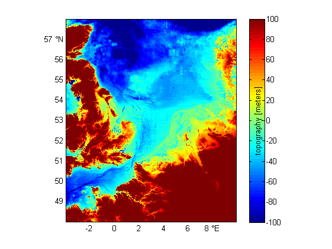

Contents
NC_CF_GRID_TUTORIAL how to read and subset a netCDF grid file
%See also: SNCTOOLS, NC_CF_GRID,... % NC_CF_STATIONTIMESERIES_TUTORIAL,... % NC_CF_GRID_WRITE_LAT_LON_ORTHOGONAL_TUTORIAL, % NC_CF_GRID_WRITE_LAT_LON_CURVILINEAR_TUTORIAL, % NC_CF_GRID_WRITE_X_Y_ORTHOGONAL_TUTORIAL % NC_CF_GRID_WRITE_X_Y_CURVILINEAR_TUTORIAL
subset orthogonal Smith & Sandwell worldbathymetric data for DCSM region
The full grid is way too large too handle.
D.url = 'http://coast-enviro.er.usgs.gov/thredds/dodsC/bathy/smith_sandwell_v11';
nc_dump(D.url)
URL http://coast-enviro.er.usgs.gov/thredds/dodsC/bathy/smith_sandwell_v11 {
dimensions:
lon = 21600 ;
lat = 17280 ;
variables:
// Preference 'PRESERVE_FVD': false,
// dimensions consistent with ncBrowse, not with native MATLAB netcdf package.
single lon(lon), shape = [21600]
lon:long_name = "Uniformly spaced longitudes (-179.9917E - 179.9917E.01667E)"
lon:units = "degrees_east"
single lat(lat), shape = [17280]
lat:long_name = "Mercator spaced latitudes (80.738N - 80.738S)"
...get full coordinate sticks
D.lon = nc_varget (D.url,'lon'); % -180 ... 180 D.lat = nc_varget (D.url,'lat'); % 90 ... -90
Determine indices of subset based on the the subregion you want
OPT.lon = [-4 10]; OPT.lat = [48 58]; ind.lon = find(D.lon > OPT.lon(1) & D.lon < OPT.lon(2) | D.lon > OPT.lon(1)+360 & D.lon < OPT.lon(2)+360) ind.lat = find(D.lat > OPT.lat(1) & D.lat < OPT.lat(2))
ind = lon: [840x1 double] ind = lon: [840x1 double] lat: [1003x1 double]
get subset
note: nc_varget is zero-based
D.lon = D.lon(ind.lon); D.lat = D.lat(ind.lat); start = [ind.lat(1)-1 ind.lon(1)-1]; % use -1 to get from 1-based Matlab to 0-based netCDF index !! count = [length(ind.lat) length(ind.lon)]; D.z = nc_varget(D.url,'topo' ,start,count); M.z.units = nc_attget(D.url,'topo','units'); M.z.long_name = nc_attget(D.url,'topo','long_name');
plot
pcolorcorcen(D.lon,D.lat,D.z); tickmap('ll') grid on axislat caxis([-100 100]) colorbarwithvtext([M.z.long_name,' [',M.z.units,']']) print('-dpng',['smith_sandwell_v11_lat_',nums2str(OPT.lat(:)'),'_lon_',nums2str(OPT.lon(:)')])